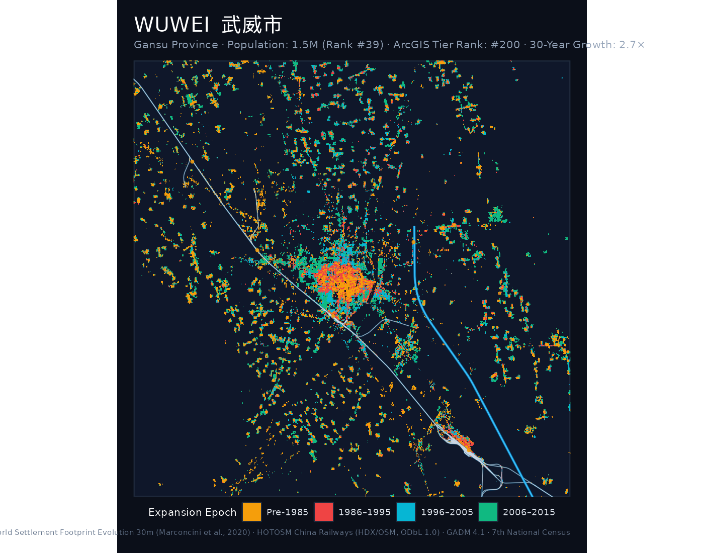
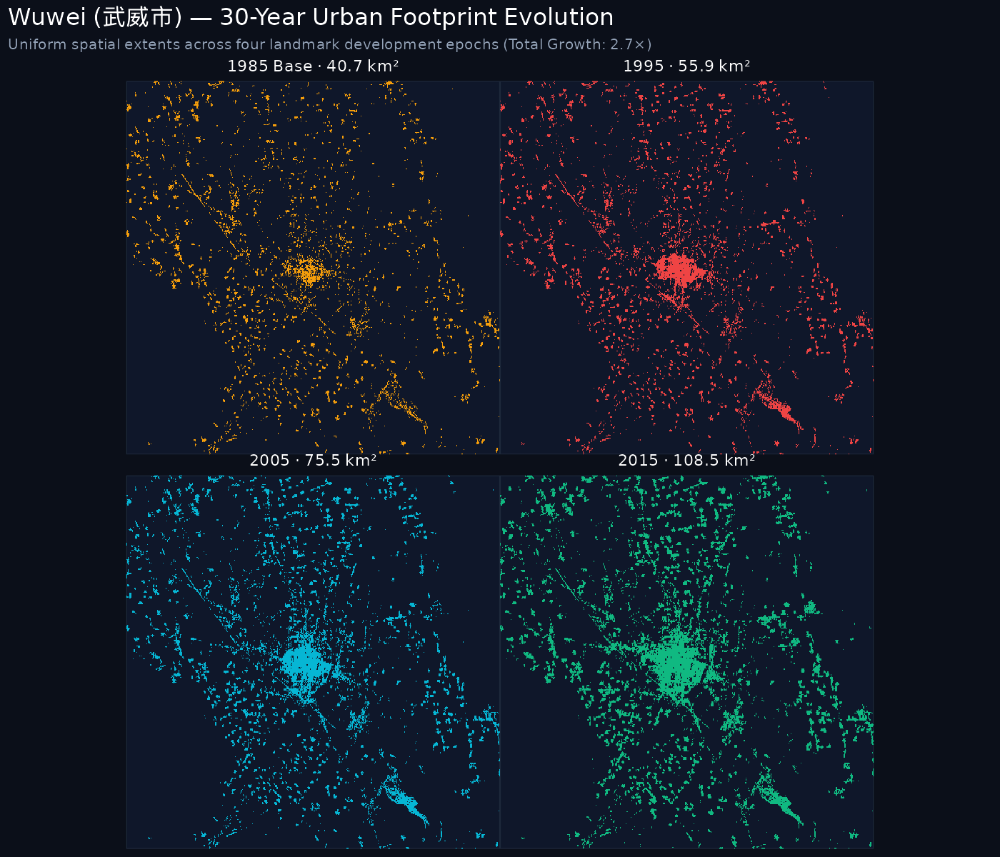
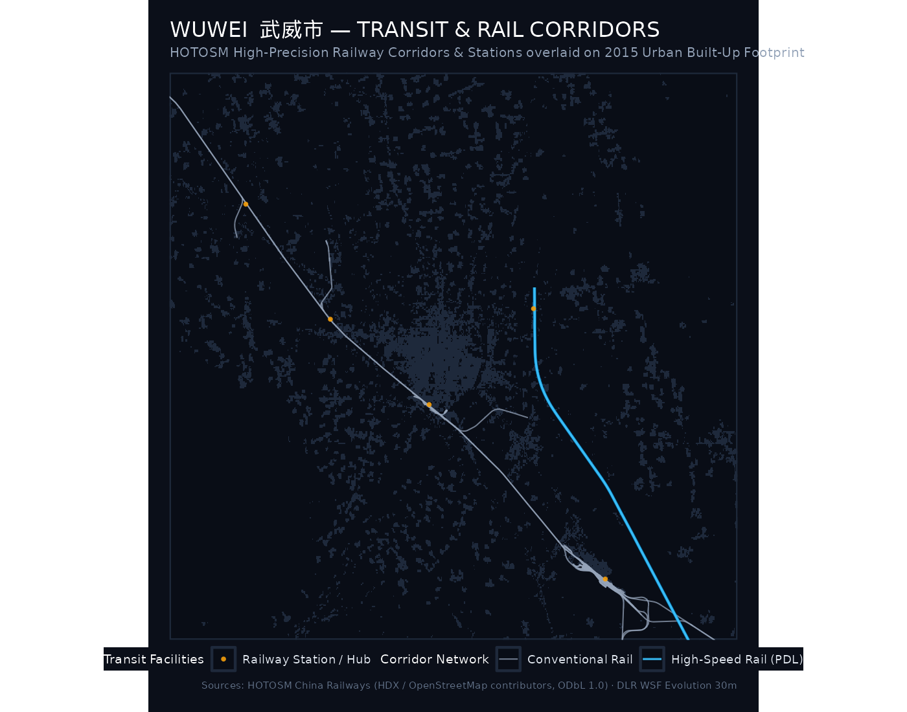
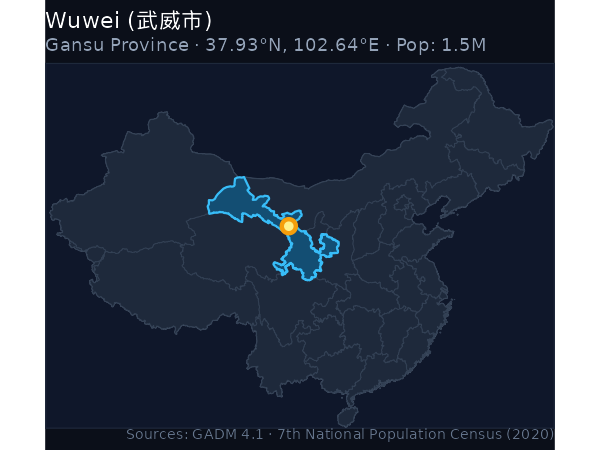
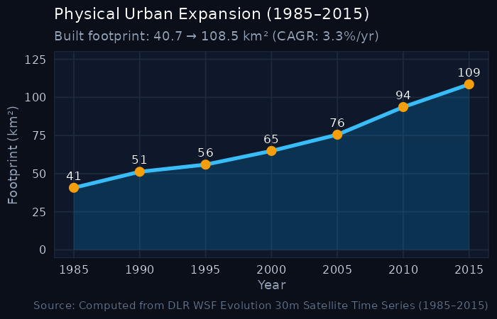

Wuwei (武威市)
Population: 1.47M · 30-Year Growth: 2.67× · Gansu
Key Urban Expansion & Hierarchy Indicators
2020 Population
1.47 M
ArcGIS City Rank
#200
1985 Baseline Area
40.73 km²
2015 Urban Footprint
108.55 km²
Growth Multiple
2.67×
Annual Growth (CAGR)
3.32%
1. The Urban Growth Rings (1985–2015)
The cartographic poster below maps the physical settlement rings of Wuwei across four historical development epochs, overlaid with the high-precision HOTOSM / OpenStreetMap railway transit network:
- ● Pre-1985 Core: Historic urban core and initial post-1949 industrial settlements.
- ● 1986–1995 Wave: Early reform, opening up, and Deng Xiaoping’s 1992 Southern Tour (Nanxun).
- ● 1996–2005 Wave: WTO entry, export industrialization, and new development zones (Kaifaqu).
- ● 2006–2015 Wave: High-speed rail expansion, modern new cities (Xinqu), and peri-urban consolidation.
- ━ Railway Corridors: High-precision vector railway network overlaid directly from HOTOSM / OpenStreetMap (high-speed passenger corridors in vibrant cyan, conventional rail lines in silver).

2. Small Multiples: 4-Epoch Footprint Progression
Uniform-scale physical footprint progression maps tracking built-up settlement expansion over time:

3. Detailed Rail Network & Transit Corridors
The high-resolution vector map below provides a detailed visualization of the railway network across Wuwei, extracted from OpenStreetMap and the Humanitarian OpenStreetMap Team (HOTOSM). The transit network is superimposed directly over the 2015 built settlement footprint (dark slate silhouette):

Transit Infrastructure Indicators
Total Track Segments
560
High-Speed Rail Segments
22
Conventional Rail
538
Stations & Terminals
8
Major Railway Lines & Corridors:
兰张高速线,兰新线,兰武1线,干武1线,干武3线,干武线,武威南西联络线Major Passenger Terminals & Stations:
上腰墩,北河,头坝河,截河坝,槐安,武威,武威东,武威南
Transit Layer Citation: Humanitarian OpenStreetMap Team (HOTOSM) & United Nations Office for the Coordination of Humanitarian Affairs (UN OCHA) Centre for Humanitarian Data, Railways of China Dataset on HDX (https://data.humdata.org/dataset/hotosm_chn_railways). Feature geometries extracted from OpenStreetMap under the Open Database License (ODbL 1.0) by OpenStreetMap contributors. Includes passenger-dedicated high-speed lines, electrified conventional trunk corridors, industrial spurs, and passenger stations.
4. Geographical Location & Growth Trajectory
Location in China

30-Year Expansion Curve

5. 5-Year Milestone Chronology
| Milestone Year | Urban Footprint (km²) | Growth vs. 1985 Baseline | Share of 2015 Footprint |
|---|---|---|---|
| 1985 | 40.73 km² | 1.00× (Baseline) | 37.5% |
| 1990 | 51.22 km² | 1.26× | 47.2% |
| 1995 | 55.91 km² | 1.37× | 51.5% |
| 2000 | 64.88 km² | 1.59× | 59.8% |
| 2005 | 75.54 km² | 1.85× | 69.6% |
| 2010 | 93.66 km² | 2.3× | 86.3% |
| 2015 | 108.55 km² | 2.67× | 100.0% |
6. Archival Cartography & Wiki Resources
Direct links to open knowledge, semantic geodata, and scanned map collections for Wuwei:
- 📖 English Wikipedia: Wuwei, Gansu — In-depth overview of history, urban development, demographic shifts, and regional governance.
- 🌐 Chinese Wikipedia (中文维基百科): 武威市 — Authoritative municipal boundaries, administrative subdivisions, and local transport infrastructure.
- 🏷️ Wikidata Knowledge Base: Q249007 (Wuwei) — Semantic knowledge graph entity with geocoordinates, OpenStreetMap tags, and linked administrative entities.
- 🗺️ Wikimedia Commons Map Repository: Category:Maps of Wuwei — Community-curated media repository containing thematic, administrative, and transport maps.
- 🔍 Scanned Maps & Historical Sheets Search: Explore scanned bitmap and topographic maps of Wuwei on Wikimedia Commons
The following scanned historical maps and cartographic surveys covering Wuwei are accessible on Wikimedia Commons:
- Wuwei-map (Wikimedia Commons scanned asset)

Additional scanned historical maps and topographic sheets can be found via the Wikimedia Commons Scanned Maps Search.
7. Data Sources & Attributions
The quantitative and spatial indicators for Wuwei are synthesized from the following primary sources:
- Urban Footprint & Built-Up Surface: German Aerospace Center (DLR) World Settlement Footprint Evolution (1985–2015). 30m resolution multi-decadal satellite detection (Marconcini et al., 2020, Nature Scientific Data).
- Permanent Resident Population: National Bureau of Statistics of China (NBS), Seventh National Population Census (第七次全国人口普查 / 七普 2020). Resident population: 1.47M (National Rank: #39 of 47).
- National Urban Tier Classification: Esri / ArcGIS Online Big Cities Points FeatureServer, National City Rank: #200 of 184 major Chinese cities.
- Detailed Transit & Railway Corridors: Humanitarian OpenStreetMap Team (HOTOSM) & UN OCHA, Railways of China Dataset on HDX. Licensed under the Open Database License (ODbL 1.0) by OpenStreetMap contributors. Includes full-precision railway alignments, high-speed rail lines, electrified conventional routes, and station points.
- Administrative Boundaries: GADM Database of Global Administrative Areas (v4.1), University of California, Davis.
- Archival Cartography & Encyclopedia Resources: Wikimedia Foundation (Wikipedia, Wikidata, and Wikimedia Commons).